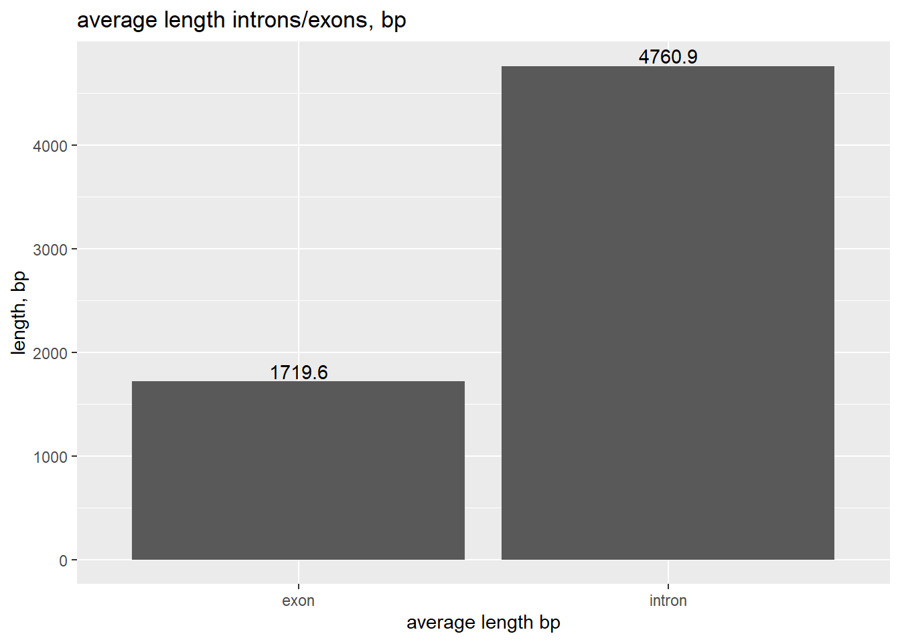
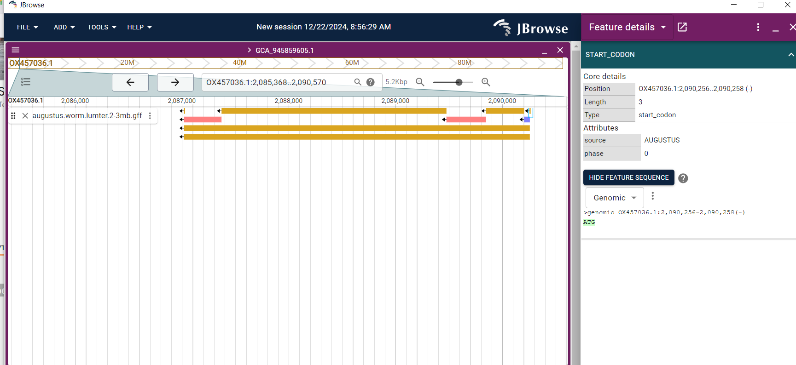
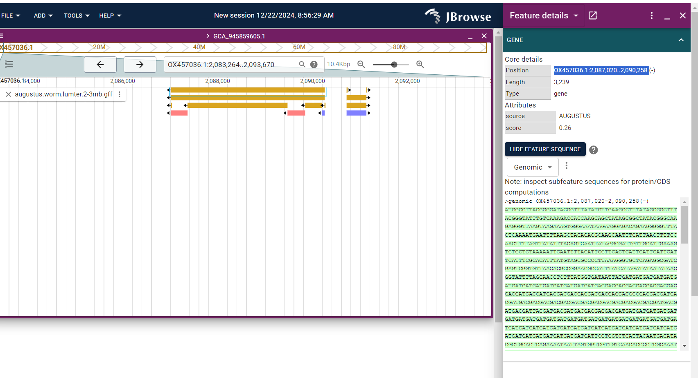
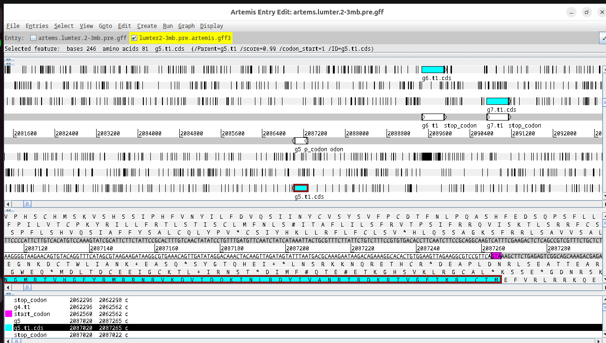

Chapter 4 Alignment. Ruwe gegevens inspecteren
Voor de Alignment zijn Bowtie en Tophat gebruikt. Het transcriptome ID49 is afkomstig van Project: PRJEB59399(ENABrowser?), dat een verzameling genomische en transcriptomische data bevat voor Lumbricus terrestris, ook wel de gewone regenworm genoemd. Dit project is opgezet om de assemblage en annotatie van het genoom te ondersteunen. Je kunt de ruwe gegevens hier bekijken: https://www.ebi.ac.uk/ena/browser/view/PRJEB59399. Reference genoom: https://ftp.ensembl.org/pub/rapid-release/species/Lumbricus_terrestris/GCA_949752735.1/ensembl/genome/
Eerst wordt de index opgebouwd met bowtie2. Daarna vindt de Alignmenet plaats met Tophat. Cufflinks voegt alle reads samen tot transcripties met: cufflinks accepted_hits.bam.
Cufflink zal transcripts.gtf genereren, terwijl TopHat accepted_hits.bam aanmaakt met de resultaten van de uitlijning en een lijst van uitlijningen in jucntions.bed. Elke junction bestaat uit twee verbonden BED-blokken, waarbij elk blok zo lang is als de maximale overhang van een lees die de junction overspant. De score is het aantal uitlijningen dat de junction overspant. Het uitvoerbestand introns.gff bevat informatie over de strengen die gebruikt kan worden voor ET-training.OX457036.1 TopHat2 intron 253060 254504 12 + . .
Ten eerste moeten we de ruwe gegevens bekijken die we hebben van de genoom-Alignment . Elke junction bestaat uit twee verbonden BED-blokken, waarbij elk blok zo lang is als de maximale overhang van een lees die de junction overspant. De score is het aantal uitlijningen dat de junction overspant. Junctions.bed (TopHat, protocol1, script2):
## V1 V2 V3 V4 V5 V6 V7 V8 V9 V10 V11
## 1 OX457036.1 135689 136300 JUNC00000001 16 - 135689 136300 255,0,0 2 143,22
## 2 OX457036.1 136278 139661 JUNC00000002 13 - 136278 139661 255,0,0 2 22,37
## 3 OX457036.1 139624 150988 JUNC00000003 9 - 139624 150988 255,0,0 2 37,70
## 4 OX457036.1 150918 153142 JUNC00000004 1 - 150918 153142 255,0,0 2 70,16
## 5 OX457036.1 150929 156647 JUNC00000005 1 - 150929 156647 255,0,0 2 59,92
## 6 OX457036.1 155453 155919 JUNC00000006 2 - 155453 155919 255,0,0 2 92,59
## V12
## 1 0,589
## 2 0,3346
## 3 0,11294
## 4 0,2208
## 5 0,5626
## 6 0,407Cufflink verwerkt de uitgelijnde RNA-Seq-reads die van Tophat komen en bouwt ze op in de transcripten en exonen.
transcripts <- read.table("lumbricus/protocol1/data_processing/TOPHAT/transcripts.gtf", sep="\t")
colnames(transcripts) <- c("chr", "versie", "feature", "start", "end", "score", "strain", "v8")
transcripts %>% select(1:5) %>% head()## chr versie feature start end
## 1 OX457036.1 Cufflinks transcript 109191 109546
## 2 OX457036.1 Cufflinks exon 109191 109546
## 3 OX457036.1 Cufflinks transcript 124949 125423
## 4 OX457036.1 Cufflinks exon 124949 125423
## 5 OX457036.1 Cufflinks transcript 135006 155436
## 6 OX457036.1 Cufflinks exon 135006 135832- We gaan de outputbestanden van Tophat+Cufflink, namelijk accepted_hits.bam en junctions.bed, in IGV zetten, samen met het transcriptbestand van Cufflinks. Eerst hebben we een bed-bestand nodig.
awk '{if($3=="exon" ) {print $1,$4,$5, $7, $3 }}' transcripts.gtf > exon_ids.bed
awk '{if($3=="transcript" ) {print $1,$4,$5, $7, $3 }}' transcripts.gtf > tranasctips_ids.b- Bekijk de bed-bestanden voor de genoombrowser:
exons_ids <- read.table("lumbricus/protocol1/data_processing/TOPHAT/igv/exon_ids.bed", sep="\t")
transcript_ids <- read.table("lumbricus/protocol1/data_processing/TOPHAT/igv/transctipts_ids.bed", sep="\t")
head(exons_ids)## V1
## 1 OX457036.1 109191 109546 . exon
## 2 OX457036.1 124949 125423 . exon
## 3 OX457036.1 135006 135832 - exon
## 4 OX457036.1 136279 136300 - exon
## 5 OX457036.1 139625 139661 - exon
## 6 OX457036.1 150919 150988 - exon## V1
## 1 OX457036.1 109191 109546 . transcript
## 2 OX457036.1 124949 125423 . transcript
## 3 OX457036.1 135006 155436 - transcript
## 4 OX457036.1 135006 156649 - transcript
## 5 OX457036.1 135006 156649 - transcript
## 6 OX457036.1 135006 156649 - transcriptBekijk de exonen (diepblauw) en transcripties (lichtblauw) in IGV:
Figure 4.1: exon-transcripts structure chr1:23kb
Vervolgens plaatsen we junctions.bed (rood) en geaccepteerde hits of reads (grijs) op dezelfde track om de exon-intronstructuur te visualiseren.
Figure 4.2: exon-intron structure chr1:23kb, reads in grey
Voordat we GeneMarkET uitvoeren, verzamelen we enkele statistieken uit de primaire analyse. Eerst bekijken we de gemiddelde introns, exonen en lengtes.
introns <- read.table("lumbricus/protocol1/data_processing/TOPHAT/introns.gff", sep="\t")
colnames(introns) <- c("chr","aligner","structure", "start", "end", "score", "strand", "v8", "v9")
head(introns)## chr aligner structure start end score strand v8 v9
## 1 OX457036.1 TopHat2 intron 135833 136278 16 - . .
## 2 OX457036.1 TopHat2 intron 136301 139624 13 - . .
## 3 OX457036.1 TopHat2 intron 139662 150918 9 - . .
## 4 OX457036.1 TopHat2 intron 150989 153126 1 - . .
## 5 OX457036.1 TopHat2 intron 150989 156555 1 - . .
## 6 OX457036.1 TopHat2 intron 155546 155860 2 - . .introns_length <- introns %>% mutate(ilength=end-start)
max_intron <- max(introns_length$ilength) %>% round(digits = 1)
avr_intron <- mean(introns_length$ilength) %>% round(digits = 1)exons <- read.table("lumbricus/protocol1/data_processing/TOPHAT/transcripts.gtf", sep="\t")
exons <- exons %>% select(1:5)
colnames(exons) <- c("chr","aligner","structure", "start", "end")
exons_length <- exons %>% mutate(elength=end-start)
max_exon <- max(exons_length$elength) %>% round(digits = 1)
max_exon## [1] 255549maximale lengte van intron : 2.91919^{5}
gemiddelde intronlengte 4760.9
maximale lengte van exon : 2.55549^{5}
gemiddelde lengte exon 1719.6

4.2 Deel 1. Model opbouwen
Het script bed_to_gff.pl van GeneMarkES maakt introns.gff aan vanuit de TopHat junctions.bed. Dit bestand bevat informatie over de strengen en kan direct gebruikt worden met GeneMarkET (protocol 1, script 2).
introns <- read.table("lumbricus/protocol1/data_processing/TOPHAT/introns.gff", sep="\t")
colnames(introns) <- c("chr","aligner","structure", "start", "end", "score", "strand", "v8", "v9")
head(introns)## chr aligner structure start end score strand v8 v9
## 1 OX457036.1 TopHat2 intron 135833 136278 16 - . .
## 2 OX457036.1 TopHat2 intron 136301 139624 13 - . .
## 3 OX457036.1 TopHat2 intron 139662 150918 9 - . .
## 4 OX457036.1 TopHat2 intron 150989 153126 1 - . .
## 5 OX457036.1 TopHat2 intron 150989 156555 1 - . .
## 6 OX457036.1 TopHat2 intron 155546 155860 2 - . .Om genemark met introns.gff uit te voeren:
- GeneMarkET gaat een ghmm-model en genemark.gtf produceren. Dit bestand(gtf) bevat informatie over de start- en eindcoördinaten van genen, die in de daaropvolgende stap gebruikt zal worden.
## cut: lumbricus/protocol1: Is a directory
## cut: /data_processing/GeneMarkES/genemark.gtf: No such file or directory- Genemark maakt gebruik van filterGenemark.pl voor kwaliteitscontrole. Dit zorgt ervoor dat alleen de genmodellen die geregistreerd zijn in de exon-intronstructuur behouden blijven. (protocol1, script3) Na het filteren van de primaire resultaten wordt er een set van 1.975 genmodellen voor één chromosoom opgeslagen in genemark.f.good.gtf.
## GeneMark.hmm3 stop_codon 51009 51011
## GeneMark.hmm3 CDS 51009 54860
## GeneMark.hmm3 exon 51009 54860
## GeneMark.hmm3 start_codon 54858 54860
## GeneMark.hmm3 stop_codon 82883 82885
## GeneMark.hmm3 CDS 82883 86734
## GeneMark.hmm3 exon 82883 86734
## GeneMark.hmm3 start_codon 86732 86734
## GeneMark.hmm3 stop_codon 116110 116112
## GeneMark.hmm3 CDS 116110 117048- Genemark.f.good.gtf is nu klaar om een trainingsset te maken van (protocol1, stap 4 en 5). Eerst wordt gtf omgezet naar gb. Zie protocol1, data_processing, Bonafide.
gff2gbSmallDNA.pl bonafide.gtf genome.fa 450 tmp.gb
filterGenesIn_mRNAname.pl bonafide.gtf tmp.gb > bonafide.gb## LOCUS OX457036.1 Lumbricus terrestris genome assembly, chromosome: 1_50559-55310 4752 bp DNA
## FEATURES Location/Qualifiers
## source 1..4752
## mRNA complement(451..4302)
## /gene="1_t"
## CDS complement(451..4302)
## /gene="1_t"
## BASE COUNT 1219 a 994 c 853 g 1655 t 31 n
## ORIGIN
## 1 catccgtctt tttggaatcg atttttatcg tattctgaaa tgttcttatc aatcttacac4.3 Etrain (protocol7)
Op basis van de genen die we hebben verkregen via mRNA-alignment, gaan we een trainingsset opstellen om een nieuw model te trainen. In de vorige sectie hebben we bonafide.gb aangemaakt, waarin 1.975 geverifieerde genen voor een specifiek chromosoom zijn opgenomen. We zijn nu klaar om de ontwikkeling van een nieuwe species te starten.
Check for Stop Codonds:
0
We hoeven geen bad lijst op te stellen, omdat er geen stopcodons in de CDS aanwezig zijn.
1975
Het randomSplit.pl-script splitst de data op in twee segmenten: een kleinere sectie genaamd test.gb voor trainingsdoeleinden, en een grotere sectie die train.gb wordt genoemd voor de evaluatie van het trainingsproces.
Deze configuratie kan worden aangepast in het configuratiebestand (map config, species, lumter_parameters.cfg).
tag: 511 (0.259) taa: 700 (0.354) tga: 764 (0.387)
Evaluatie van de voorspelling:
******* Evaluation of gene prediction *******
---------------------------------------------\
| sensitivity | specificity |
---------------------------------------------|
nucleotide level | 0.963 | 0.972 |
---------------------------------------------/
----------------------------------------------------------------------------------------------------------\
| #pred | #anno | | FP = false pos. | FN = false neg. | | |
| total/ | total/ | TP |--------------------|--------------------| sensitivity | specificity |
| unique | unique | | part | ovlp | wrng | part | ovlp | wrng | | |
----------------------------------------------------------------------------------------------------------|
| | | | 78 | 87 | | |
exon level | 389 | 398 | 311 | ------------------ | ------------------ | 0.781 | 0.799 |
| 389 | 398 | | 56 | 6 | 16 | 56 | 6 | 25 | | |
----------------------------------------------------------------------------------------------------------/
----------------------------------------------------------------------------\
transcript | #pred | #anno | TP | FP | FN | sensitivity | specificity |
----------------------------------------------------------------------------|
gene level | 389 | 398 | 311 | 78 | 87 | 0.781 | 0.799 |
----------------------------------------------------------------------------/
# total time: 31.2
# command line:
# augustus --species=wormET0 test.gbSee also: lumbricus/protocol1/test/test.out
Hier eindigt onze mRNA-pijplijn, waarbij we een hoge specificiteitsscore hebben bereikt voor het model dat we hebben gemaakt voor Lumbricus Terrestris. Dit model zal dienen voor visualisatie.
4.5 ProtHints
Er zijn veel genen in verschillende genoom die door hun evolutionaire oorsprong met elkaar verbonden zijn. De gelijkenis tussen eiwitsequenties is goed zichtbaar. OrthoDB is een belangrijke bron voor eiwitten en dient als een database die eiwitten met een uitgebreider evolutionair verleden omvat. Zie protocol 2.
14733
Prothint heeft een database met eiwitten voorbereid voor startAlign.pl. Het resultaat was 14.733 eiwitten in het bestand seed_proteins.faa. Dit seed-bestand kan worden gebruikt met startAlign.pl om een gth.concat.alg-object te verkrijgen, dat vervolgens wordt gebruikt om bonafide.gb te genereren.
## >6249_g
## MPSVSGLIEMMMMMTATITVMMTVTTVRIVERLGWGSYDTDGDDGDDDDDDDDDDDDDDDDDDDDSNNNSSNPPQVTAELCRRELRRCRHRFRSTSSEMTAPPAASAAAAEPGHDGLRTVTELVSGSGSKFVADSTERMNSDDQVDLGNLHSLPPTDSPEALRACSVRTITRTIVDRRMSPIIKVIKGETSKNELLINLDYAARVSENIYIADDDVLGVVEQDSVPHEVREGQAQVQKCRQRHPGRHHVHAEAPKQLRVKDLLKVPTRRLEVDTNFEPSGFKATTPPLHHRAPPIILISITVVGALLSQDDDDDDIDDGEGMIMTTTRTTTMLIYL
##
## >10626_g
## MLGRGDCERKKQGNGILETAIHEHAWLQYLEGTDERNGKKSKAGNLKAKREKLQKMRKGDIEEIGLLRGFAERKEKQGETEGLTGQVEEMEIDGPTTEKARHCLVAKRARGTSSCPFAAERRARRASMSETGRQRMRSNSIMDALGYWQPMQHITHVGIRPMSRAAERRTRSNRPRTPRGRPTRIEQQWSIRLNYQRIMRERACNHSKLTKLVVTASSNKIDMLAETEFTVKGNTQVTNRGRETNQRQIDLLKLPTATQPNELTDLTPSKRMVVDLLPRLQ
##
## >2633_g
## MSSAHAHVNASRRQQRQTINVRQRKDGEGRRLKRGVLVGNSEDLTVNWVWKATRCRPVPLRYQGVSNETLRMNCNSTSGEGRFGTAIAIGVRRQKKGAKRQQDEKLPLLVKIQRGGRNYRVLCQLQHSPSTHLQKRIGNDGKQEEGDIPSSSNLHSNPYELKNFYIYAGEVQRGR
##
## >1749_gNaast het seed_proteins.faa genereert protHints een prothint_augustus.gff hintsbestand dat je direct kunt gebruiken met augustus.
## OX457036.1 ProtHint stop 51009 51011 2 - 0 src=P;mult=9;pri=4;al_score=0.163636;
## OX457036.1 ProtHint start 52806 52808 2 - 0 src=P;mult=2;pri=4;al_score=0.2;
## OX457036.1 ProtHint intron 53104 53221 2 - . src=P;mult=1;pri=4;al_score=0.361685;
## OX457036.1 ProtHint intron 53515 53655 0 - . src=P;mult=1;pri=4;al_score=0.108387;
## OX457036.1 ProtHint start 55225 55227 0 - 0 src=P;mult=1;pri=4;al_score=0.104132;
## OX457036.1 ProtHint stop 82883 82885 2 - 0 src=P;mult=11;pri=4;al_score=0.163636;
## OX457036.1 ProtHint intron 84978 85095 2 - . src=P;mult=1;pri=4;al_score=0.361685;
## OX457036.1 ProtHint intron 85389 85529 0 - . src=P;mult=1;pri=4;al_score=0.108387;
## OX457036.1 ProtHint start 87099 87101 0 - 0 src=P;mult=1;pri=4;al_score=0.104132;
## OX457036.1 ProtHint intron 144544 144597 0 + . src=P;mult=1;pri=4;al_score=0.13595;- We kunnen augustus meteen draaien met de prothint_augustus.gff die door de eiwitten zijn gemaakt, voordat we de trainingsset aanpakken.
augustus --species=lumter\
--predictionStart=2000000 --predictionEnd=3000000\
OX457036.1.fasta\
--extrinsicCfgFile=extrinsic.cfg\
--hintsfile=prothint_augustus.gff \
> augustus.hints.prots.orthodb.arthropoda.2-3mb.gffHierdoor ontstaat een annotatie voor 2mb-3mb van het chromosoom, gebaseerd op de eiwitindicaties van eiwitten die een lange evolutionaire afstand hebben.
cat lumbricus/protocol2/data_processing\
/ProtHints/augustus.hints.prots.orthodb.arthropoda.2-3mb.gff | \
tail -n 50## # 3'UTR exons and introns: 0/0
## # hint groups fully obeyed: 0
## # incompatible hint groups: 2
## # P: 2 (407821_0:000ad4_584_g)
## # end gene g81
## ###
## # start gene g82
## OX457036.1 AUGUSTUS gene 2981898 2982863 1 - . g82
## OX457036.1 AUGUSTUS transcript 2981898 2982863 1 - . g82.t1
## OX457036.1 AUGUSTUS stop_codon 2981898 2981900 . - 0 transcript_id "g82.t1"; gene_id "g82";
## OX457036.1 AUGUSTUS CDS 2981898 2982863 1 - 0 transcript_id "g82.t1"; gene_id "g82";
## OX457036.1 AUGUSTUS start_codon 2982861 2982863 . - 0 transcript_id "g82.t1"; gene_id "g82";
## # protein sequence = [MDDEETVPYSLPRTTSTPATKGAAEASAFGQSRAEAYRTFEDPEYQFLDLPKKDRKKVLISETTVSDSKRWEDASHLM
## # GPRKIQMKPGKFDGTSSLESFLTQFEVCARHNRWDDSDKVDFLRCALDKAATQLLWDFGARADVTYDQLVGRLRQRYGVEGQAETYRAQLYYRRQRAD
## # ESLSDLLHDIRRLVVLAYPVPSNETTEIVARDSFLEAIRDRELSLKVREREPKSIDEAYRVALRLSAYQQMTDVDDRRRPPNRVRQTQEADAGNQLQT
## # QLDGFLAAQRKWQRDFEDRISLQLNELRNQSQTHPDVAPATRNPASP]
## # Evidence for and against this transcript:
## # % of transcript supported by hints (any source): 100
## # CDS exons: 1/1
## # P: 1
## # CDS introns: 0/0
## # 5'UTR exons and introns: 0/0
## # 3'UTR exons and introns: 0/0
## # hint groups fully obeyed: 0
## # incompatible hint groups: 1
## # P: 1 (407821_0:000ad4_584_g)
## # end gene g82
## ###
## # start gene g83
## OX457036.1 AUGUSTUS gene 2983320 2984174 0.91 - . g83
## OX457036.1 AUGUSTUS transcript 2983320 2984174 0.91 - . g83.t1
## OX457036.1 AUGUSTUS stop_codon 2983320 2983322 . - 0 transcript_id "g83.t1"; gene_id "g83";
## OX457036.1 AUGUSTUS CDS 2983320 2984174 0.91 - 0 transcript_id "g83.t1"; gene_id "g83";
## OX457036.1 AUGUSTUS start_codon 2984172 2984174 . - 0 transcript_id "g83.t1"; gene_id "g83";
## # protein sequence = [MEKAGLYFNLKKTKLMTTENWTSFEVDGEEMKVVTCFCFFGAMIENDGGCERYCGSLAGGINFFAVCVFFACSERTCL
## # SEPLVASSSCPLEPAPSSRLFARSNLPLRAARCLFELPDRTCPSEPPVRCSSRTCPSEPLAASSSCPLEPAPPSRLSACSGRLRPLRAASSLFELLAR
## # TSLFRTFAAESNLFVRAACLLLRTGLETYKRRKKKKPSFAVGIEVGESQSLRVNPSGVSQRNEKGSSSSVVRSPSPRKVISSIRQSEVSSSFKLRLKL
## # RLNSGQFVVE]
## # Evidence for and against this transcript:
## # % of transcript supported by hints (any source): 0
## # CDS exons: 0/1
## # CDS introns: 0/0
## # 5'UTR exons and introns: 0/0
## # 3'UTR exons and introns: 0/0
## # hint groups fully obeyed: 0
## # incompatible hint groups: 0
## # end gene g83
## ###
## # command line:
## # augustus --species=lumter --predictionStart=2000000 --predictionEnd=3000000 OX457036.1.fasta --extrinsicCfgFile=extrinsic.cfg --hintsfile=prothint_augustus.gff4.7 GenomeThreader
We hebben 14.733 eiwitten verzameld uit de eerdere secties. Nu gaan we een trainingsset opzetten met deze eiwitten. Uit de oorspronkelijke 14.733 eiwitten hebben we een klein deel gekozen om de trainingsset te vormen.
startAlign.pl --genome OX457036.1.fasta \
--prot seed_proteins.faa \
--pos OX457036.1:1-10000000 \
--prg gth- Hierdoor ontstaat het object gth.concat.aln, dat vervolgens kan worden geconverteerd naar het gtf-formaat (protocol2 ,data_processing, protHints).
Controleer het gtf-bestand :
## OX457036.1 gth CDS 51009 54860 . - 0 gene_id "OX457036.1_g_gene1_mRNA1"; transcript_id "OX457036.1_t_gene1_mRNA1";
## OX457036.1 gth exon 51009 54860 . - 0 gene_id "OX457036.1_g_gene1_mRNA1"; transcript_id "OX457036.1_t_gene1_mRNA1";
## OX457036.1 gth CDS 82883 86734 . - 0 gene_id "OX457036.1_g_gene2_mRNA2"; transcript_id "OX457036.1_t_gene2_mRNA2";
## OX457036.1 gth exon 82883 86734 . - 0 gene_id "OX457036.1_g_gene2_mRNA2"; transcript_id "OX457036.1_t_gene2_mRNA2";
## OX457036.1 gth CDS 104626 104645 . - 2 gene_id "OX457036.1_g_gene3_mRNA3"; transcript_id "OX457036.1_t_gene3_mRNA3";
## OX457036.1 gth exon 104626 104645 . - 2 gene_id "OX457036.1_g_gene3_mRNA3"; transcript_id "OX457036.1_t_gene3_mRNA3";
## OX457036.1 gth CDS 104696 104750 . - 0 gene_id "OX457036.1_g_gene3_mRNA3"; transcript_id "OX457036.1_t_gene3_mRNA3";
## OX457036.1 gth exon 104696 104750 . - 0 gene_id "OX457036.1_g_gene3_mRNA3"; transcript_id "OX457036.1_t_gene3_mRNA3";
## OX457036.1 gth CDS 104904 105745 . - 2 gene_id "OX457036.1_g_gene3_mRNA3"; transcript_id "OX457036.1_t_gene3_mRNA3";
## OX457036.1 gth exon 104904 105745 . - 2 gene_id "OX457036.1_g_gene3_mRNA3"; transcript_id "OX457036.1_t_gene3_mRNA3";Output van computeFlankingRegion.pl:
Total length gene length (including introns): 5412279. Number of genes: 1090. Average Length: 4965.39357798165 The flanking_DNA value is: 2482 (the Minimum of 10 000 and 2482)
Bonafide.gb wordt in de volgende pipeline gebruikt om redundantie te verwijderen.
4.8 Protocol 6.Verwijderen van Redundant Genstructuren (protocol 6)
Voor NCBI Blast, controleer de link en stel het Path in naar de Blast uitvoerbare bestanden.
export PATH=\(PATH:\)HOME/ncbi-blast-2.16.0+
Maak gebruik van de opgegeven commandoregel om het GTF-bestand van de trainingsgenstructuur te transformeren naar een FASTA-bestand dat de eiwitsequentie omvat.
Inspecteer prot.aa :
## >OX457036.1_t_gene395_mRNA512
## ESLLPRCCPAGRGGGSQDSIAHARCFDRRITFSMMTLVGLGKEGLKRRKGGMDGERDLNWLEGGMGGEVQNWRVIGIERRY*
## >OX457036.1_t_gene508_mRNA640
## MEESRPVTPAQPSRPPSSMEVLLEAIQTNAKSTHDAMTSIQSSLQLNARDTQEAIATVELNVLAVQSNVREEISSVKSYVRDTQDAISSVQSNVSDAISSVQLNVREEISAVRDNVREALTEVVSRLERLETSPVPKPAVDLNPGYLTAITTADAPYHSTIGLEETLGARPKDFTQPGILRRSDRLAGRPPISYREYGSRKDWPPFLGWDSNPEVTSSCPPSISRARPQQHAVPSSEDPEVATPGMPIGAGISSLSQNDYSEALLARKLLGEKKEKQKKWKEGGMEKGKKMKKENKKEEKGKWTEEKGKNKNGKKKEKEKERK*
## >OX457036.1_t_gene532_mRNA668
## MTCLRRIEGVTRRERIRNTEIHNRLKIQRDIVDRIQIRRMRYFGHVVRMQSGRYPKVALQGYVHGKRRRGRPRKRWMDVAEEDCLRMGLTVGEATRRAQDRDDWRLSIKERLMRAKASPAP*
## >OX457036.1_t_gene891_mRNA1213
## GKGRVNGCCFWRIRSGKLVREISTFCDIEFCEFCKFGRDSFEVSCRGGKMASLEEELIPEFGDVRDIPSDTLRLVSETYGEEVEDVSRSQVRRMAMKPLSPKLGSAAWKLKAQAKKEEAELERLHLKEDREWEREKERMRFEEKKMQIEAEREEKKMQIEAEREEKKMQIEAEENKLRIEAEENKLRIAAEENKLRIEAEETKRRFDMEEKRMNMEFEKQKLEMDGRRIEGGGAVERPAHGNEDLRFGAALKFVPKFDSADIEHYFAAFEQAMTLHQIPMGKWSSLLQPQLSGKAAKVFAALSLEECVQYDIVKSALLTAYERIPEFYRKKFRGLRKEPRETYANYAFRLQSPFQRWIEGTNSWEELAKFKEVILMEQFVQALPIEVHRWLIDKSPDTVASAARLADEYAVLYKQGPNHYSGGFRRDFFDRTRGFSSDESEKKDVWERQGVGYKDGTRRDTNWGRRSPQRGTYGFNKPGRENDDVTGFGEPVTCAFCRAPGHTKASCWKLKRKEGTQMENWRGAKPVGLVQTVSAPVKPQSFPKPIESVDKLYAPFCVIGCVIDDEGARKEAVFLRDSGALQSLVSNEWLNEHEFVHMNETRLLRGISGSIVECPLVKVNVDCAFVQGEVLCCLMNSLPMAGVHCIVGNDTALAGQVLEVAVTTRAQARAHAVRQSERETAVCSEAAPEQSEIVGQSTESADQERTPGEIIDRQVERMNFDEGDLSSLFAATESVVTERSELYVSRQELILRQRRCPELRPLYAQVDETVSVGGRVQPYALVDEVLVRRWEEKCTPLGMGVVQIVVPRDLRQKLLHVAHDIPAAGHLGTRKTLDRLTKHFWWPHVNRDVREFCRSCDVCQRLGKGNRNYRAPMVSMPVMEEVFQRLAMDIVGPLSVCEGTGNRFILTVVDLASHFPFAFPLKNHTAQDVAKCLCEVFSLFXXXXXXXXXXXXXXXXXXXXXXXXXXXXXXXXXXXXXXXXXXXXXXXXXXXXDMLKALAETYPGSWDAMLPWILFAYREVPVQGTGFSAFDLMYGRDVRGMLQLMKEEWLAKDVVHEVSGKNVIDYVLQLRERMRVGLKLAGENAVDAKSKSKQLYDKQSRAVSFEEGEKVLLLIPLVGKPLQTKYGGPYVVVRRLGPVDYLVSTPDRRKTERVVHVNLMKRYVDRMDVVYERPNEEVVASVLVVNPDVRMNDVTLEDKVLQCEVSAECRAELRDVLHDFAHVFSDVPGKTSMVSHRIDLVEGARPVRQYPYRLNPEKMARVDKEVNQLLEAGIIEESESPWAAPIVLVPKPNGTDRLCTDFRKLNGLSVPDPFLMPRVEVLIDRVGQSRFITKLDMTKGYWQIPMHPESVPLTAFVTPKGHYQWKXXXXXXXXXXXXXXXXXXXXXXXXXXXXXXXXXXXXXXXXXXXXXXXXXXXXLSRIADACLSLNLAKCVFANASVDFLGHHIGIDGVQPRLKKVEAVLKFPRPATKKQVQSFLGLAGYYQRYLPHFSDITLPLTALTKKGIPFRWNEEAEVAFLDLKSRLASRPILIPPDFTKQFCVGVDASQFCLGACLFQMKDGLEHPICYLSRKLLPQEIRYSTIEKEALALMVALRAFSVYFGSAVVLVPHVLVGGYVSVSYLLPLWASLLGLSLTMWELREGQAWRVVRVLRRLSSSIAVPPRW*
## >OX457036.1_t_gene296_mRNA397
## WSEEPEEGDGVWLVMIVEELQKIGIHEADHSMVDHIRNEEVLKLAGSRYLEYIIMGRRGRLAGHILRLPKERIARTAIKWVPEGGKRRRGRPRNTWRRTFKGDLERMGLGWNEAEEVADDRVEWRGLVDQCSDRNRRK*Voer een Blast uit van alle eiwitsequenties uit de vorige stap met elkaar en toon alleen de eiwitsequenties die minder dan 80% identiek zijn aan een andere sequentie in de groep.
head lumbricus/protocol2/data_processing/Redundancy/prot.nr.aa
grep ">" lumbricus/protocol2/data_processing/Redundancy/prot.nr.aa | wc -l## >OX457036.1_t_gene753_mRNA930
## SIVGAATEVYNRMSSDFLPTPTKSHYIFNLRDLSKCIQESKQVFRLFCHEALRVFHDRLTTSEDKMSFYAILAEIAPKFFNENADAQSFLKHPIIFGDFIKVAAPREDRVYEDLGNLDKIKGALQDIVVEEFLEDINNILNSGEVPNLFEPEEYEMNIVGCRPAAKEVGVAEGNRDGIYEFFINREALLSVSQTAFMPADIGSEEIKASNNGLTKLLETNELIDKMKGDLVALEPELRKKSEDTNVLMEKLAADQEKADTVRKVVMEDEAVAKVKAEETQAIAEDAQRDLDEALPALEAAIRDISEIRVFIKPPELVQTVMEAGFLKSLYEYKKDLIPDAVLKKLKKYTDNPKFTPEAVEKVSKVVMKTLREKQKMLAEVEAKIAELQKTYDISVAEKQRLEKSMSLTQARLRRAGKLTTALADEKTRWEESVALSTIIGDVFVSAACIAYYGAFTSNYRQELVALWARRCVELNIPVSKNMSLVSVLADPYEIRQWNTDGLPRDSVSTENAILVTRGRRWPLMIDPQEQNSIRLGIPVLLEDISETIDPSLEPVLLKQTFMSGGRLVIRLGDSNIEYGKGFKFYMTTKLSNPHYLPEVCIKVTIINFTVTKTGLEDQLLSEVVSLERPDLEEQRNQLIVKINTDKNQLKAIEDRILKLLFESEGNILDNEDLVTSGVISVRLKEAEATEEKISVNRERYRVVATRGSVMFFVVANMAEADPMYQFSLKYFKQLFSGTIQHSESNKELQKRLQILLQATTVDWWCHCLEAGRFESTSSRHIMKIGGLITTDEWNYFLRGAAGLKKELPRKPDIGWLSQALWKESWNMEFMLRSFVGLSRDMTATPCWVQFGQLKFRANPERSNTYGPEPPEPPPLNPGSKEDLADDGKVKGHWDKRLTPFQKLIFIKAFEEEKENLGPSFIESPPTDLATLYADMLNVTPLVFVLSTGSDPMGAFQRFARERGFQDRIQSISLGQGQGPVAEKMILAAYLTGDWVFLQDIVKEMGEKPQTVHPSFRLFLSSMPDVSFPVSVLQNSVKYEFNDCDRECALLNLNMFCVNEVIPWDALIYITGEIQETSNLIATILDMQPRLTGGGAGKSNDDIVYELAADILAQLMDKLDIEEAKQDTFENHARKYGLPVDHLSFKYNVLPVYRDQVEVAEALAKQQFGEEIEPDRKLTSPTDGLLVHGLFMDGFRWDGENRALADALPGEMNSALPVLHMEPVMDYEAEESDYQAPLYKTAARAGVLSTTEKDMCQVARDWLKAIVTALVTTVHCLITNDYRLFFSVSLLQGIRQTLL*
## >OX457036.1_t_gene803_mRNA1030
## SQKSRASATIVVCDLDHMMIRLPHFTAKRSVEPFQSTEEQVLGRIRSFPQGSSGGPDGLRPQHLSDLVNCVEIGSELIFAITGLVNLLLKGECPEDIRPVLFGGTLMALRKDSGGLRPIVIGYYWRRLASKCANAFAVTRATAYLAPRQVGVGVPGGAEAAVHAARRFLETMPAGSILVKLDFKNAFNSLYRDQMLSSIDDILPELSPFCHLAYAEPSELRFGQYLISSQVGPQQGDPLGPLLFCLPLQPILQDLSSPLVLGYMDDLSLGGEAVLVAKDVNLLMQKCEQLGLQLNQKKCEIIYQHDLQSHDHLFQNFTVTSPERACLLGAPLSTSEALTTCLEGRCTELALAINRLETIAKHDALILLRCSLSSHRLMYTLRCSPCTGNVLLDKFDGLIRNGLSAVLNIALSNDQWLQASLPVKMGGLGIRRVASLALPAFLASAASTRALQSSMLGNACPEFDERVELMKHLWCTESQSGLPESSVAHKQSSWDKPLMQKMIAELSIALSDPYHKARFMAVAAPHAGDWLFALPVTSCGLRLDDEAVRIAVGLRLGTCICEPHACPCGARVTANGAHGLSCGLGPGRIARHATLNDLFSRSLTRAGFPNIKEPPGLSRSDGRRPDGLTLIPWYKGRNLVWDATVIDTVAPSYIPATSLSAGAAAGLAATRKVDKYNHLTATYLFVPLAFETMGPINIEGMKLLKDLGRLLTRITGDPKETTYLFQRFSVCIQRFNASQPQSTEIGQSFIFCDNTNPEDKSNHTTAIRHPDLPNGLLRHIPKGARTAAAHLLTDIIGGILREPLLPSGWLRLLSFVSGALEKPTRGGKRHNLTQHIKLRIDTFKNDWQTSASLLFWYVLRQRSRRKSKEAASRSQHRGRCSSQARGRQSQRCGAHSLLRRHTSSN*
## >OX457036.1_t_gene103_mRNA135
## MSINFAQRIQMPGIERVHGVTKVRNEFNILGYSVSFRYVISVFEDRIPYRLRKEIRLTGIRNAVDIGSSENANCLYVSDYEEKCVRKITRERDGGHKIIKWLITAYRPNTLSVTGEGHLLVVNSWSSILSIYGSDAQLIRFIQLPRGMSYPLHAVETSIGNFIVIHEWIEKEEEGKSGSIGRESDLIKEVNIKDDEDSRSITTIDDEEEGEEEQTWPTAKTTVTV
## >OX457036.1_t_gene500_mRNA632
## IMRAEIQGRLNRGRQKKSWMDMIQQDMEFLGLRKEEVRDRTTWRQRIRINGLKYVYVYGHVSVNMKDIIIEHRLTVAELHFLKRAEILDRREKPLDVERKRQTETETGRQTERGRENERERERERERQRERQTDRETERQRERQTERQRDRERERERERENEITRQRDRVIERERERQRERHTETERERDAE*
## >OX457036.1_t_gene503_mRNA635
## MCEVAEYFENGELVIFDDSDPAPSYADEMESDEMDDSKSDFPEAECAMALLELAQSFGLVSSLNSFGHINDETGLRNAATEPSNVPLNNTAENLASTADARQHFSAFSNVVPIDESHLRVTPDCSTRTSAFDLLTVVRLDHSYETRRPHAPGSASSGNRAVKKAKSETTLDKLRKIRKRNGKRKPEVAERNDERRALESSSSPHSDRNIFAAAAAVSHLKSQSHPPHLSNTNAWKEEVPLEEPFKIPPAKAGVGIRGRRDELFSS*
## 602Daarna hebben we 602 niet-redudante eiwitten om mee verder te gaan:
## 602cat bonafide.gb | perl -ne ’if(m/\/gene=\"(\S+)\"/){ \
print "\"".$1."\"\n";}’ | sort -u > traingenes.lstregel 1: syntaxisfout bij onverwacht token `(’
Dit leverde een syntaxisfout op, waarna alle perl -ne regex werden vervangen door Python regex, die werden uitgevoerd in de IDE.
import re
import subprocess
# Read from the file 'bonafide.gb'
with open('bonafide.gb', 'r') as file:
content = file.read()
# Find all unique gene names
gene_names = set(re.findall(r'/gene="(\S+)"', content))
# Writing unique gene names to a file
with open('traingenes.lst', 'w') as f:
for gene in sorted(gene_names):
f.write(f'"{gene}"\n')De uitvoer bevat de strings die als transcriptnamen worden gebruikt in het bonafide.gtf-bestand, waaruit bonafide.gb oorspronkelijk is gemaakt, met aanhalingstekens.
## "OX457036.1_t_gene1000_mRNA1441"
## "OX457036.1_t_gene1001_mRNA1448"
## "OX457036.1_t_gene1002_mRNA1452"
## "OX457036.1_t_gene1003_mRNA1454"
## "OX457036.1_t_gene1004_mRNA1455"
## "OX457036.1_t_gene1006_mRNA1462"
## "OX457036.1_t_gene1007_mRNA1463"
## "OX457036.1_t_gene1008_mRNA1464"
## "OX457036.1_t_gene1009_mRNA1468"
## "OX457036.1_t_gene100_mRNA132"Hierna volgt een reeks scripts/opdrachten die alleen bedoeld zijn om een lijst te verkrijgen van niet-redudante genen en hun bijbehorende loci in GeneBank.Dit is voornamelijk een bewerking voor tekstbestanden
## OX457036.1_t_gene753_mRNA930
## OX457036.1_t_gene803_mRNA1030
## OX457036.1_t_gene103_mRNA135
## OX457036.1_t_gene500_mRNA632
## OX457036.1_t_gene503_mRNA635
## OX457036.1_t_gene504_mRNA636
## OX457036.1_t_gene573_mRNA720
## OX457036.1_t_gene618_mRNA766
## OX457036.1_t_gene384_mRNA500
## OX457036.1_t_gene496_mRNA628Isoleer de genen in traingenes.lst van bonafide.gtf:
## OX457036.1 gth CDS 51009 54860 . - 0 gene_id "OX457036.1_g_gene1_mRNA1"; transcript_id "OX457036.1_t_gene1_mRNA1";
## OX457036.1 gth exon 51009 54860 . - 0 gene_id "OX457036.1_g_gene1_mRNA1"; transcript_id "OX457036.1_t_gene1_mRNA1";
## OX457036.1 gth CDS 82883 86734 . - 0 gene_id "OX457036.1_g_gene2_mRNA2"; transcript_id "OX457036.1_t_gene2_mRNA2";
## OX457036.1 gth exon 82883 86734 . - 0 gene_id "OX457036.1_g_gene2_mRNA2"; transcript_id "OX457036.1_t_gene2_mRNA2";
## OX457036.1 gth CDS 104626 104645 . - 2 gene_id "OX457036.1_g_gene3_mRNA3"; transcript_id "OX457036.1_t_gene3_mRNA3";
## OX457036.1 gth exon 104626 104645 . - 2 gene_id "OX457036.1_g_gene3_mRNA3"; transcript_id "OX457036.1_t_gene3_mRNA3";
## OX457036.1 gth CDS 104696 104750 . - 0 gene_id "OX457036.1_g_gene3_mRNA3"; transcript_id "OX457036.1_t_gene3_mRNA3";
## OX457036.1 gth exon 104696 104750 . - 0 gene_id "OX457036.1_g_gene3_mRNA3"; transcript_id "OX457036.1_t_gene3_mRNA3";
## OX457036.1 gth CDS 104904 105745 . - 2 gene_id "OX457036.1_g_gene3_mRNA3"; transcript_id "OX457036.1_t_gene3_mRNA3";
## OX457036.1 gth exon 104904 105745 . - 2 gene_id "OX457036.1_g_gene3_mRNA3"; transcript_id "OX457036.1_t_gene3_mRNA3";## OX457036.1_t_gene753_mRNA930
## OX457036.1_t_gene803_mRNA1030
## OX457036.1_t_gene103_mRNA135
## OX457036.1_t_gene500_mRNA632
## OX457036.1_t_gene503_mRNA635
## OX457036.1_t_gene504_mRNA636
## OX457036.1_t_gene573_mRNA720
## OX457036.1_t_gene618_mRNA766
## OX457036.1_t_gene384_mRNA500
## OX457036.1_t_gene496_mRNA628In nonred.lst gaan we nu een niet-redundante subset van genen vinden.
Voor het filteren van het bestand bonafide.gb hebben we een lijst met loci-namen nodig in plaats van genenamen.
cat bonafide.gb | perl -ne ’
if ( $_ =~ m/LOCUS\s+(\S+)\s/ ) {
$txLocus = $1;
} elsif ( $_ =~ m/\/gene=\"(\S+)\"/ ) {
$txInGb3{$1} = $txLocus
}
if( eof() ) {
foreach ( keys %txInGb3 ) {
print "$_\t$txInGb3{$_}\n";
}
}’ > loci.lst
Unrecognized character \xE2; marked by <-- HERE after <-- HERE near column 1 at -e line 1.
cat: write error: Broken pipe
./test.sh: line 2: syntax error near unexpected token `('
./test.sh: line 2: `if ( $_ =~ m/LOCUS\s+(\S+)\s/ ) {'Deze commando van het protocol veroorzaakte een fout en is vervangen. Het is nu locilist.py (scripts, protocol2).
import re
txInGb3 = {}
txLocus = ""
with open("bonafideOrtho.gb.db") as file:
for line in file:
if re.search(r'LOCUS\s+(\S+)\s', line):
txLocus = re.search(r'LOCUS\s+(\S+)\s', line).group(1)
elif re.search(r'/gene="(\S+)"', line):
gene = re.search(r'/gene="(\S+)"', line).group(1)
txInGb3[gene] = txLocus
with open("loci.lst", "w") as output_file:
for key in txInGb3.keys():
output_file.write(f"{key}\t{txInGb3[key]}\n")en nonred.loci.py (scripts, protocol2)):
import subprocess
with open('nonred.lst', 'r') as f:
patterns = f.read().splitlines()
with open('loci.lst', 'r') as f:
loci = f.read().splitlines()
matched_loci = [locus.split('\t')[1] for locus in loci if any(pattern in locus for pattern in patterns)]
with open('nonred.loci.lst', 'w') as f:
f.write('\n'.join(matched_loci))wat nonred.loci.lst en loci.lst (met 2 kolommen) produceert:
## OX457036.1_102144-115856
## OX457036.1_161655-167728
## OX457036.1_180282-185623
## OX457036.1_225887-235418
## OX457036.1_345964-351295
## OX457036.1_411769-417637
## OX457036.1_418604-428585
## OX457036.1_428586-437296
## OX457036.1_468333-473965
## OX457036.1_488481-495418## OX457036.1_t_gene1_mRNA1 OX457036.1_48527-57342
## OX457036.1_t_gene2_mRNA2 OX457036.1_80401-89216
## OX457036.1_t_gene3_mRNA3 OX457036.1_102144-115856
## OX457036.1_t_gene4_mRNA4 OX457036.1_138781-147529
## OX457036.1_t_gene5_mRNA5 OX457036.1_161655-167728
## OX457036.1_t_gene6_mRNA6 OX457036.1_180282-185623
## OX457036.1_t_gene7_mRNA7 OX457036.1_225887-235418
## OX457036.1_t_gene8_mRNA8 OX457036.1_321850-327440
## OX457036.1_t_gene9_mRNA9 OX457036.1_345964-351295
## OX457036.1_t_gene10_mRNA10 OX457036.1_389861-394620Deze commando haalt enkel de laatste locus uit de bonafide.gb. Het doel is om alle unieke loci uit de bonafide.gb te verzamelen, niet alleen de laatste.
Om alle unieke loci te krijgen, moeten we dit in een loop zetten (protocol2, scripts, bonafide.nonred.f.py).
import re
origfilename ="bonafideRED.gb"
goodfilename ="nonred.loci.lst"
goodlist = {}
with open(goodfilename, 'r') as goodfile:
for line in goodfile:
goodlist[line.strip()] = 1
with open(origfilename, 'r') as origfile:
content = origfile.read().split('\n//\n')
for gendaten in content:
match = re.match(r'^LOCUS +(\S+) .*', gendaten)
if match:
genname = match.group(1)
if genname in goodlist:
with open('bonafide.filtered.nonred.gb', 'a') as f2:
f2.write( gendaten+ '\n'+'//'+'\n')
f2.close()
## 602Na deze fase zijn er 602 verschillende loci in Bonafide.
4.9 Trainingsset van Proteins.Etrain
We hebben in de vorige sectie 602 niet-redundante genstructuren ontdekt die kunnen dienen om een nieuwe soort te ontwikkelen. Creëer een nieuwe species
Check for stop-codons:
49
We moeten 49 stopcodons uitfilteren.Bad List:
etraining --species=wormNonredEP bonafide.gb 2>&1\
| grep "in sequence" \
| sed -E 's/.*n sequence (\\S+):.*/\\1/' \
| sort -u > bad.pre.list
grep -oE "in sequence.*(OX457036.[1-9A-Za-z_0-]{1,})\w+" \
bad.pre.list\
| grep -oE "(OX457036.[1-9A-Za-z_0-]{1,})\w+"> bad.list## OX457036.1_80264327-80269533
## OX457036.1_3169142-3174603
## OX457036.1_3169142-3174603
## OX457036.1_82306032-82311964
## OX457036.1_83519819-83526493
## OX457036.1_85356189-85367403
## OX457036.1_3254876-3258078
## OX457036.1_87513969-87519492
## OX457036.1_3258079-3261568
## OX457036.1_92067632-92073579Vervolgens fitler bad.list uit bonafide.gb:
bonafide.gb:602 bonafide.filtered.gb:373
test.gb is een klein bestand dat dient voor training. Train.gb is een groot bestand dat gebruikt wordt om de training te evalueren.
## # Read in 373 genbank sequences.
## Quantiles of the GC contents in the training set:
## 0% 0.351
## 5% 0.385 10% 0.388
## 15% 0.393 20% 0.397
## 25% 0.4 30% 0.403
## 35% 0.405 40% 0.407
## 45% 0.412 50% 0.415
## 55% 0.417 60% 0.419
## 65% 0.425 70% 0.429
## 75% 0.432 80% 0.438
## 85% 0.446 90% 0.456
## 95% 0.478 100% 0.596
## HMM-training the parameters...
## i= 0 bc= (0.237, 0.263, 0.263, 0.237)
## ** building model for exons *EXON*
## gene OX457036.1_t_gene1093_mRNA1640 transcr. 1 in sequence OX457036.1_98424851-98432363: Initial exon does not begin with start codon but with ttc
## start codon frequencies: ATG(372)
## # admissible start codons and their probabilities: ATG(1), CTG(0), TTG(0)
## number of bases in the reading frames: 160917 161284 161285
## --- frame = 0 --- minPatSum = 233
## --- frame = 1 --- minPatSum = 233
## --- frame = 2 --- minPatSum = 233
## --- initial frame = 0 --- minPatSum = 233
## --- initial frame = 1 --- minPatSum = 233
## --- initial frame = 2 --- minPatSum = 233
## --- internal exon terminal frame = 0 --- minPatSum = 233
## --- internal exon terminal frame = 1 --- minPatSum = 233
## --- internal exon terminal frame = 2 --- minPatSum = 233
## single, initial, internal, terminal mean exon lengths :
## 934 275 199 246
## single exon : 66
## initial exon 0 : 134
## initial exon 1 : 79
## initial exon 2 : 93
## internal exon 0 : 511
## internal exon 1 : 196
## internal exon 2 : 193
## terminal exon : 307
## Frequency of stop codons:
## tag: 97 (0.26)
## taa: 102 (0.273)
## tga: 174 (0.466)
## end *EXON*
## Storing parameters to file...
## Writing exon model parameters [1] to file /home/alena/anaconda3/envs/c/config/species/wormNonredEP/wormNonredEP_exon_probs.pbl.tag: 97 (0.26) taa: 102 (0.273) tga: 174 (0.466)
Je moet deze waarden corrigeren in je wormNonredEP_parameters.cfg in config map
Eerst werd er een test gedaan op het model voordat het geoptimaliseerd werd, waarbij redudante structuren werden verwijderd. Deze test gaf een gevoeligheid en specificiteit van 0.01.
Na het toepassen van het protocol voor het verwijderen van redundante genstructuren, nam de specificiteit toe met 0,3 tot 0,5 punten.
******* Evaluation of gene prediction *******
---------------------------------------------\
| sensitivity | specificity |
---------------------------------------------|
nucleotide level | 0.942 | 0.762 |
---------------------------------------------/
----------------------------------------------------------------------------------------------------------\
| #pred | #anno | | FP = false pos. | FN = false neg. | | |
| total/ | total/ | TP |--------------------|--------------------| sensitivity | specificity |
| unique | unique | | part | ovlp | wrng | part | ovlp | wrng | | |
----------------------------------------------------------------------------------------------------------|
| | | | 1071 | 767 | | |
exon level | 1884 | 1580 | 813 | ------------------ | ------------------ | 0.515 | 0.432 |
| 1884 | 1580 | | 436 | 104 | 531 | 456 | 145 | 166 | | |
----------------------------------------------------------------------------------------------------------/
----------------------------------------------------------------------------\
transcript | #pred | #anno | TP | FP | FN | sensitivity | specificity |
----------------------------------------------------------------------------|
gene level | 454 | 373 | 88 | 366 | 285 | 0.236 | 0.194 |
----------------------------------------------------------------------------/Zie lumbricus/protocol2/test/test.out voor meer informatie.
4.10 Prediction met behulp van extrinsiek bewijs (Protocol 11-12)
Voor de extrinistiek Hints is proteoom van wormen geselecteerd. Het proteoom komt van UniProt, dat zowel het proteoom van Lumbricus Terrestris als dat van Eisenia Fetida omvat. Twee van de Fasta-bestanden die we van UniProt hebben gekregen, zijn in één bestand samengevoegd.
Proteome Lumbcricus Terrestris: https://www.uniprot.org/uniprotkb?query=%28taxonomy_id%3A6397%29
Proteome Eisenia Fetida: https://www.uniprot.org/uniprotkb?query=%28taxonomy_id%3A6393%29
Samengevat Lumbricus en Eisenia:
lumbcricus -> protocl12 -> data_processing -> merged_6393_and_6397.fa
Fasta files, afkomstig van Uniprot: Eisienia: lumbricus -> protocl12 -> data_raw-> uniprotkb_taxonomy_id_6393_2024_12_29.fasta Lumbricus : lumbricus -> protocl12 -> data_raw-> uniprotkb_taxonomy_id_6397_2024_12_29.fasta.
Eerste step is de ProtHints:
Het programma ProtHints wordt gebruikt om hints voor te bereiden (ProtHints installatie vond plaats in protocol 2). In deze fase wordt het bestand prothint_augustus.gff aangemaakt. Voorbeeld prothint_augustus.gff :
OX457036.1 ProtHint start 33409650 33409652 2 - 0 src=P;mult=2;pri=4;al_score=0.433058;
OX457036.1 ProtHint intron 34198705 34199175 2 + . src=P;mult=2;pri=4;al_score=0.38446;
OX457036.1 ProtHint intron 34199278 34199565 2 + . src=P;mult=2;pri=4;al_score=0.26901;
OX457036.1 ProtHint intron 37878497 37880236 2 + . src=P;mult=1;pri=4;al_score=0.488541;
OX457036.1 ProtHint intron 37880480 37881139 2 + . src=P;mult=1;pri=4;al_score=0.474112;
OX457036.1 ProtHint stop 37881166 37881168 2 + 0 src=P;mult=1;pri=4;al_score=0.429752;Je kunt hints gelijk toepassen in augustus.
augustus --species=caenorhabditis
--predictionStart=2000000 --predictionEnd=3000000\
OX457036.1.fasta
--extrinsicCfgFile=extrinsic.cfg
--hintsfile=prothint_augustus.gff
> augustus.extrinistics.hints.gffFor de extrinsic.cfg zee:
https://github.com/nextgenusfs/augustus/blob/master/config/extrinsic/cgp.extrinsic.cfg
Voorbeeld extrinsic.cfg:
# source of extrinsic information:
# M manual anchor (required)
# P protein database hit
# E EST/cDNA database hit
# C combined est/protein database hit
# D Dialign
# R retroposed genes
# T transMapped refSeqs
# W wiggle track coverage info from RNA-Seq
[SOURCES]
M RM E W P
#
# individual_liability: Only unsatisfiable hints are disregarded. By default this flag is not set
# and the whole hint group is disregarded when one hint in it is unsatisfiable.
# 1group1gene: Try to predict a single gene that covers all hints of a given group. This is relevant for
# hint groups with gaps, e.g. when two ESTs, say 5' and 3', from the same clone align nearby.
#
[SOURCE-PARAMETERS]
# feature bonus malus gradelevelcolumns
# r+/r-
#
# the gradelevel colums have the following format for each source
# sourcecharacter numscoreclasses boundary ... boundary gradequot ... gradequot
#
[GENERAL]
start 1 0.8 M 1 1e+100 RM 1 1 E 1 1 W 1 1 P 1 1e3
stop 1 0.8 M 1 1e+100 RM 1 1 E 1 1 W 1 1 P 1 1e3
tss 1 1 M 1 1e+100 RM 1 1 E 1 1 W 1 1 P 1 1
tts 1 1 M 1 1e+100 RM 1 1 E 1 1 W 1 1 P 1 1
ass 1 0.95 0.1 M 1 1e+100 RM 1 1 E 1 1 W 1 1 P 1 100
dss 1 0.95 0.1 M 1 1e+100 RM 1 1 E 1 1 W 1 1 P 1 100
exonpart 1 .992 .985 M 1 1e+100 RM 1 1 E 1 1 W 1 1.02 P 1 1
exon 1 0.9 M 1 1e+100 RM 1 1 E 1 1 W 1 1 P 1 1e4
intronpart 1 1 M 1 1e+100 RM 1 1 E 1 1 W 1 1 P 1 1
intron 1 .34 M 1 1e+100 RM 1 1 E 1 1e6 W 1 1 P 1 100
CDSpart 1 1 .985 M 1 1e+100 RM 1 1 E 1 1 W 1 1 P 1 1e5
CDS 1 1 M 1 1e+100 RM 1 1 E 1 1 W 1 1 P 1 1
UTRpart 1 1 1 M 1 1e+100 RM 1 1 E 1 1 W 1 1 P 1 1
UTR 1 1 M 1 1e+100 RM 1 1 E 1 1 W 1 1 P 1 1
irpart 1 1 M 1 1e+100 RM 1 1 E 1 1 W 1 1 P 1 1
nonexonpart 1 1 M 1 1e+100 RM 1 1.15 E 1 1 W 1 1 P 1 1
genicpart 1 1 M 1 1e+100 RM 1 1 E 1 1 W 1 1 P 1 1Tijdens deze stap wordt er een gff-annotatiebestand geproduceerd. Voorbeeld Augustus gff van protein Hints:
# start gene g10
OX457036.1 AUGUSTUS gene 2072765 2073299 0.59 + . g10
OX457036.1 AUGUSTUS transcript 2072765 2073299 0.59 + . g10.t1
OX457036.1 AUGUSTUS tss 2072765 2072765 . + . transcript_id "g10.t1"; gene_id "g10";
OX457036.1 AUGUSTUS 5'-UTR 2072765 2072799 0.99 + . transcript_id "g10.t1"; gene_id "g10";
OX457036.1 AUGUSTUS start_codon 2072800 2072802 . + 0 transcript_id "g10.t1"; gene_id "g10";
OX457036.1 AUGUSTUS single 2072800 2073033 0.93 + 0 transcript_id "g10.t1"; gene_id "g10";
OX457036.1 AUGUSTUS CDS 2072800 2073033 0.93 + 0 transcript_id "g10.t1"; gene_id "g10";
OX457036.1 AUGUSTUS stop_codon 2073031 2073033 . + 0 transcript_id "g10.t1"; gene_id "g10";
OX457036.1 AUGUSTUS 3'-UTR 2073034 2073299 0.6 + . transcript_id "g10.t1"; gene_id "g10";
OX457036.1 AUGUSTUS tts 2073299 2073299 . + . transcript_id "g10.t1"; gene_id "g10";
# protein sequence = [MYKLVDETSKLAWLLCLMRMLSQKYYVSSMLMLANSRASLLPLLIAYNELISRDDELSCYRFLHSCDMFILTFFRRS]
# Evidence for and against this transcript:
# % of transcript supported by hints (any source): 0
# CDS exons: 0/1
# CDS introns: 0/0
# 5'UTR exons and introns: 0/1
# 3'UTR exons and introns: 0/1
# hint groups fully obeyed: 0
# incompatible hint groups: 0
# end gene g10De gff die we van deze pipeline hebben ontvangen, is hier te vinden: lumbricus/protocol12/gff
4.12 Gen-identificatie
Alle voorspellingen zijn gebaseerd op een DNA-fragment van 1 mb, wat overeenkomt met 1% van chromosoom. De exacte locatie is aangeduid als 2000000-3000000. (2-3 mb) van chr1. De predictor is toegepast op het nieuwe lumtermodel (zie, protocol 1, model) dat in deel 1 is ontwikkeld. Alle stappen voor identificatie zijn vastgelegd in prediction.xlsx (map identification).
Voor het identificeren van genen hebben we de qblast() functie gebruikt uit de Bio.Blast.NCBIWWW module van Biopython. De qblast functie heeft verschillende opties die vergelijkbaar zijn met de parameters die je kunt instellen op de BLAST webpagina. Wij hebben nucleotide blast (“blastn”, “nt”) gebruikt. Deze functie is bedoeld om nucleotidesequenties te vinden die vergelijkbaar zijn met die van andere organismen, en deze gegevens zijn beschikbaar in de NCBI-database. Hulp voor de qblast functie:
Some useful parameters:
- program blastn, blastp, blastx, tblastn, or tblastx (lower case)
- database Which database to search against (e.g. "nr").
- sequence The sequence to search.
- ncbi_gi TRUE/FALSE whether to give 'gi' identifier.
- descriptions Number of descriptions to show. Def 500.
- alignments Number of alignments to show. Def 500.
- expect An expect value cutoff. Def 10.0.
- matrix_name Specify an alt. matrix (PAM30, PAM70, BLOSUM80, BLOSUM45).
- filter "none" turns off filtering. Default no filtering
- format_type "HTML", "Text", "ASN.1", or "XML". Def. "XML".
- entrez_query Entrez query to limit Blast search
- hitlist_size Number of hits to return. Default 50
- megablast TRUE/FALSE whether to use MEga BLAST algorithm (blastn only)
- short_query TRUE/FALSE whether to adjust the search parameters for a
short query sequence. Note that this will override
manually set parameters like word size and e value. Turns
off when sequence length is > 30 residues. Default: None.
- service plain, psi, phi, rpsblast, megablast (lower case)
This function does no checking of the validity of the parameters
and passes the values to the server as is. More help is available at:
https://ncbi.github.io/blast-cloud/dev/api.html
</p>Eerst hebben we het ruwe GFF-bestand voorbereid voor de Blast API door alle spaties en het ‘#’ symbool te verwijderen. Om de gencoördinaten te krijgen, maakten we gebruik van een regex-patroon.
Voor het ophalen van de coderingssequentie uit het GFF-bestand maakten we gebruik van een andere regex.
Nadat je het GFF-bestand hebt geparsed, is het klaar voor gebruik met de Blast API. Elke coderingssequentie heeft een unieke identificatie die de start- en eindcoördinaten bevat: genomisch OX457036.1:2000789-2003917
Voor meer details kun je de scripts bekijken, vooral parsegtf.py, deel identification.
## >genomic OX457036.1:2000789-2003917
## atggaggagtctaggccagtcactcccgctcagccttctaggcccccttcttctatggagatattgctcgaggcaatac
## aaactaatgctaggtccactcatgaagcaatacagactaacgctaagtcttcacaagaggctatgcaagcgcatgctaagtcaactcatgatgctatg
## acttctatacagtcgtctttgcaactgaatgccagagagacgcaagaggcgattgccacggtggagtttaatgtcctggcagtgcaatcaaatgttag
## cgaagctatttcctcagtgcaatcaaatgtaagagaggagataagagaagagatctcggctgtaagagataatgtcagggaagcgctgacggaaatgg
## tatcacgattggaaaggctagaggcgtcgccggtacccaagcctgctgtggattcgaaccctggttacctcaccgctattacccctgcggacgcgcca
## taccactcgaccatcggcctgggggaaactttgggtgctaggcctaaagatttcacgcaacctggtatattgcggagaagtgatagattggctggtag
## gccgccaatttcatatagggagtacggtagtcgaaaagactggccgcctttcctgggttgggattcgaacccagaagtcacctcctcctgtcctccct
## ctatctctagagctcgtccacagcagcacgcggtcccatcaggcgaggatccggaagtggcgactccggggatgccgataggggcgggcgttacaatt
## ggtcccagccagtggggtcaaattagttctagagattttggtgatgataggttagaagaggaaactgactatgctagaacaggcgaaatggcaatttcDe blast-query’s via Bio.Blast.NCBIWWW.qblast zijn uitgevoerd en de resultaten zijn teruggegeven in XML-formaat (voor meer informatie, zie: blast.py).
from Bio.Blast import NCBIWWW
from Bio.Blast import NCBIXML
genomic="genome.fa"
sequence_data = open(genomic).read()
sequence_data
result_handle = NCBIWWW.qblast("blastn", "nt", sequence_data, hitlist_size=5, alignments=50)
with open('reults.xml', 'w') as save_file:
blast_results = result_handle.read()
save_file.write(blast_results)
Voor de blast-analyse is het bestand genome.fa opgedeeld in drie verschillende fracties, wat resulteerde in 3 xml-bestanden (identificatie->xml). Elke DNA-sequentie die je invoert in nucleotide BLAST krijgt een bepaald aantal hits, en het geeft ook wat statistieken over die hits.
Een voorbeeld van een hit: .
<Iteration_hits>
<Hit>
<Hit_num>1</Hit_num>
<Hit_id>gi|11071239|emb|AJ299434.1|</Hit_id>
<Hit_def>Lumbricus rubellus mt2A gene for metallothionein 2A, exons 1-4</Hit_def>
<Hit_accession>AJ299434</Hit_accession>
<Hit_len>7302</Hit_len>
<Hit_hsps>
<Hsp>
<Hsp_num>1</Hsp_num>
<Hsp_bit-score>85.143</Hsp_bit-score>
<Hsp_score>93</Hsp_score>
<Hsp_evalue>7.19655e-12</Hsp_evalue>
<Hsp_query-from>70</Hsp_query-from>
<Hsp_query-to>246</Hsp_query-to>
<Hsp_hit-from>306</Hsp_hit-from>
<Hsp_hit-to>490</Hsp_hit-to>
<Hsp_query-frame>1</Hsp_query-frame>
<Hsp_hit-frame>1</Hsp_hit-frame>
<Hsp_identity>131</Hsp_identity>
<Hsp_positive>131</Hsp_positive>
<Hsp_gaps>8</Hsp_gaps>
<Hsp_align-len>185</Hsp_align-len>
<Hsp_qseq>AGATTGAACATCAAACAGGATATAGTTGACAAAGTGCGGAATAGAAGAATGCGATACTTTGGACATGTGA------CAAGAATGGGGAACGAAATATATCCAAAGATAGGC-TCAACGGATATGTACATGGGAAAAGATCAAGGGGA-GACCAAAGAAAAGATGGATCGACACGATAAGAGATGA</Hsp_qseq>
<Hsp_hseq>AGACTGAATATTCAACATGATATAATACACAAGATCCAAAGTAAACGACTACGCTACTTTGGCCACGTATATATATCCAGAATGAGGGATGAGAGATACCCGAAGGTAGCTGTCAACGGATATGTGCATGGAAAAAGAAAAAAAGGAAGACCAAAGAAGAGATGGGTCGACATGATACGTGAGGA</Hsp_hseq>
<Hsp_midline>||| |||| || |||| |||||| | |||| | | | || | || | || |||||||| || || | |||||| || | || | ||| || ||| ||| ||||||||||||| ||||| |||||| || ||| |||||||||| |||||| |||||| |||| | || ||</Hsp_midline>
</Hsp>
</Hit_hsps>
</Hit>De XML-resultaten van de blast-uitvoer laten zien hoe goed de Alignment overeenkomt, samen met de eval-waarde. De gevonden Hits worden bewaard met het NCBI-referentienummer, zoals “ref XM_003731435.1”, of het Ensemble-referentienummer, zoals “emb OE003277.1”. Zodra je de XML-resultaten hebt, is de eerste stap om ze te parseren. De XML-resultaten zijn geparsed en gesorteerd op coördinaten en e-waarde (sort-blast-by-coords.py, sort-blast-by-pval.py).
import os
cwd = os.getcwd()
print(cwd)
import sys
from Bio.Blast import NCBIXML
OUT = open("sorted_by_coordinates.fraction3.txt", 'w')
OUT.write("Query Name\tQuery Length\tAlignment ID NCBI\teValue\n")
result_handle = open("blast.results.fraction3.xml")
blast_records = NCBIXML.parse(result_handle)
for rec in blast_records:
for alignment in rec.alignments:
for hsp in alignment.hsps:
fields = [rec.query_id, rec.query[:100], str(rec.query_length), alignment.hit_id,
alignment.accession, str(hsp.expect)]
OUT.write("\t".join(fields) + "\n")
OUT.close()
print('Done') sorted_by_coordinate <- read_excel("lumbricus/identification/prediction.xlsx", sheet = 6 )
sorted_by_p <- read_excel("lumbricus/identification/prediction.xlsx", sheet = 5 )
# sorted by coordinates
head(sorted_by_coordinate )## # A tibble: 6 × 6
## `Query Name` `Query Length` `Alignment ID NCBI` eValue Column1 `_1`
## <chr> <chr> <dbl> <chr> <chr> <dbl>
## 1 Query_1234140 genomic OX457036.1:2… 459 gi|26… XM_063… 6.18e-5
## 2 Query_1234140 genomic OX457036.1:2… 459 gi|26… XM_063… 3.20e-2
## 3 Query_1234140 genomic OX457036.1:2… 459 gi|26… XM_062… 4.75e-1
## 4 Query_1234140 genomic OX457036.1:2… 459 gi|26… XM_062… 4.75e-1
## 5 Query_1234140 genomic OX457036.1:2… 459 gi|26… XM_062… 4.75e-1
## 6 Query_1234141 genomic OX457036.1:2… 408 gi|28… OZ0783… 4.46e-6## # A tibble: 6 × 2
## Column1 Column2
## <chr> <chr>
## 1 <NA> <NA>
## 2 query: genomic OX457036.1:2108840-2109808
## 3 match: gi|2739567124|gb|CP157508.1| Candidozyma auris strain BA03 chromosome…
## 4 query: genomic OX457036.1:2108840-2109808
## 5 match: gi|2739567124|gb|CP157508.1| Candidozyma auris strain BA03 chromosome…
## 6 query: genomic OX457036.1:2108840-2109808Eerst moeten we naar alle voorspellingen kijken, ook naar de voorspellingen met ongunstige eval-waarden (vergelijkbaar met p-waarden). Alle voorspellingen: .
all_predictions <- read_excel("lumbricus/identification/prediction.xlsx", sheet = 1 )
all_predictions ## # A tibble: 89 × 5
## `OX457036.1:2000789-2003917` AUGUSTUS gene predicted:not satisfac…¹ `185403`
## <chr> <chr> <chr> <chr> <chr>
## 1 OX457036.1:2007959-2008723 AUGUSTUS gene predicted:not satisfact… 1852
## 2 OX457036.1:2039309-2039692 AUGUSTUS gene predicted:not satisfact… 881419
## 3 OX457036.1:2062296-2062562 AUGUSTUS gene predicted:not satisfact… 0
## 4 OX457036.1:2087020-2087265 AUGUSTUS gene predicted: Lumbricus ru… 7.38114…
## 5 OX457036.1:2089471-2089899 AUGUSTUS gene predicted:Lampetra plan… 8.69409…
## 6 OX457036.1:2090721-2091137 AUGUSTUS gene predicted:not satisfact… 965729
## 7 OX457036.1:2106048-210639 AUGUSTUS gene predicted:Mus musculus … 6.12276…
## 8 OX457036.1:2106538-2106948 AUGUSTUS gene predicted:not satisfact… 640374
## 9 OX457036.1:2107471-2108487 AUGUSTUS gene predicted:not satisfact… 3.24628…
## 10 OX457036.1:2108840-2109808 AUGUSTUS gene predicted: Candidozyma … 1.27857…
## # ℹ 79 more rows
## # ℹ abbreviated name: ¹`predicted:not satisfactory p-value`In deze fase hadden we voorspellingen( Hits) voor 92 genen op een 1mb chromosoom (tussen 2mb en 3mb), zelfs met enkele genen die niet zo’n goede eval-waarden hadden.
all_predictions $eval <- parse_number(all_predictions $eval)
df.f.pavlue <- all_predictions %>% filter(eval<= 1e-4) %>% filter(eval!=0)
head(df.f.pavlue)## # A tibble: 6 × 5
## id source feature predicted eval
## <chr> <chr> <chr> <chr> <dbl>
## 1 OX457036.1:2087020-2087265 AUGUSTUS gene predicted: Lumbricus rub… 7.38e- 7
## 2 OX457036.1:2089471-2089899 AUGUSTUS gene predicted:Lampetra plane… 8.69e-99
## 3 OX457036.1:2106048-210639 AUGUSTUS gene predicted:Mus musculus c… 6.12e-10
## 4 OX457036.1:2108840-2109808 AUGUSTUS gene predicted: Candidozyma a… 1.28e-22
## 5 OX457036.1:2108840-2109808 AUGUSTUS gene predictied: Phaeodactylu… 2.82e-13
## 6 OX457036.1:2112894-2113442 AUGUSTUS gene predicted: Ixodes scapu… 1.27e-14In de daaropvolgende fase hebben we een eval, evaluatiedrempel van 1e-4 ingesteld, wat redelijk mild is.Na het filteren van de voorspellingen met ongunstige eval-waarden, hebben we 32 voorspellingen gevonden die betrekking hebben op 32 genen voor een 1 Mb segment van het eerste chromosoom, wat 1% van het totale chromosoom is. De uiteindelijke voorspelling voor het fragment dat we onderzoeken, is als volgt.
predicition:
| V7 |
|---|
| predicted: Lumbricus rubellus mt2A gene for metallothionein 2A, exons 1-4;AJ299434.1; |
| predicted:Lampetra planeri genome assembly, chromosome: 62; emb OZ078387.2 |
| predicted:Mus musculus chromosome 8, clone RP23-339I14, complete sequence;AC121136.11 |
| predicted: Candidozyma auris strain BA03 chromosome; 1 eval; CP157508.1 |
| predictied: Phaeodactylum tricornutum CCAP 1055/1 predicted protein partial mRN;XM_002176960.1 |
| predicted: Ixodes scapularis G-protein coupled receptor dmsr; XM_029969893.4 |
| predicted :Melanogrammus aeglefinus genome assembly, chromosome: 10; emb OZ180142.1 |
| predicted : Earthworm (L.terrestris) extracellular globin chain c gene, complete cds; gb J05161.1 LUMHBC |
| predicted:Zymobacter palmae IAM14233 DNA, complete genome;dbj|AP018933.1 |
| predicted: Hylaeus volcanicus uncharacterized LOC128877144 (LOC128877144), transcript variant X5, mRNA;XM_054124195.1 |
| predicted:Mus musculus BAC clone RP23-95F15 from chromosome 1, complete sequence;AC165443.5 |
| predicted:4_Tte_b3v08;emb|OE003277.1 |
| predicted:Earthworm (L.terrestris) extracellular globin chain c gene, complete cds;J05161.1 LUMHBC |
| predicted: XM_009033761.1| Helobdella robusta hypothetical protein mRNA |
| predicted:XM_069820523.1| PREDICTED: Periplaneta americana carbonic anhydrase beta (CAHbeta), transcript variant X3, mRNA |
| preddicted:Loxodonta africana zinc finger protein 252-like (LOC100666328), transcript variant X4, mRNA |
| predicted:gb|KX592814.1| Bos taurus isolate Dominette_000065F genomic sequence |
| predicted: gb|J05161.1|LUMHBC Earthworm (L.terrestris) extracellular globin chain c gene, complete cds |
| predicted:ref|XM_637462.1| Dictyostelium discoideum AX4 hypothetical protein (DDB_G0277655) mRNA, complete cds |
| predicted:Rattus norvegicus uncharacterized LOC134482949 (LOC134482949), ncRNA |
| Melanogrammus aeglefinus genome assembly, chromosome: 13 |
| predicted:PREDICTED: Portunus trituberculatus putative uncharacterized protein DDB_G0271982 (LOC123514901), partial mRNA |
| predicted:emb|LN021320.1| Spirometra erinaceieuropaei genome assembly S_erinaceieuropaei ,scaffold SPER_scaffold0020968 |
| predicted: gb|L12688.1|LUMBT Earthworm DNA sequence |
| prediction:emb|OZ078459.1| Lampetra fluviatilis genome assembly, chromosome: 56 |
| emb|OZ180149.1| Melanogrammus aeglefinus genome assembly, chromosome: 17 |
| predicted: ef|NC_043824.1|;Passiflora obovata chloroplast, complete genome;gb|MK694931.1| |
| predicted:ref|XM_005559078.4;Macaca fascicularis piggyBac transposable element derived 4 (PGBD4), mRNA |
| predicted:emb|OE179951.1| 2_Tcm_b3v08 |
| predicted:emb;BX544872.8;Zebrafish DNA sequence from clone DKEY-58L12 in linkage group 3, complete sequence |
| predicted:XM_023356947.1;Centruroides sculpturatus uncharacterized LOC111615539 (LOC111615539), mRNA |
| predicted:XM_066083420.1| PREDICTED: Magallana gigas retrovirus-related Pol polyprotein from transposon 412 (LOC105343682), mRNA |
For more details,see Voor meer informatie, kijk in de map identification, prediction.xlsx, sheet “df_fitlered”.
4.14 GenViz
Voor het voorbereiden van de data kun je de volgende bestanden bekijken: genviz-features.py, map visualisatie en GenomeViz. De genen die zijn gevonden, worden weergegeven in grafieken, met speciale aandacht voor de eerste 2-3 megabases van chromosoom 1 (coördinaten 2000000-3000000).
Om te scrollen door de features, kun je de webversie gebruiken:
https://alenagrrr3.github.io/2-3mb-terrsetris/
De totale representatie van het chromosoom /OX457036.1.
4.15 JBrowse
Het gen met de coördinaten OX457036.1:2,087,020 - 2,090,258 is geïdentificeerd als het mt2A-gen voor metallothioneïne 2A van Lumbricus rubellus, inclusief exons 1-4; AJ299434.1. is onderzocht in de in Jbrowser (JBrowse | JBrowse, n.d.)
Gene 5, with intron, Cds, and transctipt:
  To zoom in, you can ues the link:
{kind=link}
4.16 Artemis
gen "g5" (OX457036.1:2,087,020 - 2,090,258 ) in Artemis Browser met startcodon en CDS (minus streng): To zoom in, you can ues the link:
{kind=link}
4.17 Bijlage
Map struture:
## lumbricus
## ├── bib
## ├── DESCRIPTION
## ├── docs
## │ ├── docs.pdf
## │ ├── pva_feedback.v.1.0_lajsa_alena_merged.docx
## │ ├── PVA_Regenwormproject.html
## │ └── PVA_regenwormproject.Rmd
## ├── identification
## │ ├── gff
## │ │ └── lumter2-3mb.gff3
## │ ├── prediciton
## │ │ ├── df.filtered.txt
## │ │ └── genome.fa.gff
## │ ├── prediction.xlsx
## │ ├── scripts
## │ │ ├── blast.py
## │ │ ├── parsegtf.py
## │ │ ├── soort-blast-by-coords.py
## │ │ └── sort-blast-by-pval.py
## │ └── xml
## │ ├── blast.results.fraction2.xml
## │ ├── blast.results.fraction3.xml
## │ └── results.fraction1.xml
## ├── lumbricus.Rproj
## ├── NAMESPACE
## ├── protocol1
## │ ├── data_processing
## │ │ ├── bonafide
## │ │ │ ├── bonafide.gb
## │ │ │ ├── bonafide.gb.test
## │ │ │ ├── bonafide.gb.train
## │ │ │ ├── bonafide.unique.gb
## │ │ │ ├── etrain.out
## │ │ │ └── test.out
## │ │ ├── GeneMarkES
## │ │ │ ├── genemark.average_gene_length.out
## │ │ │ ├── genemark.f.good.gtf
## │ │ │ ├── genemark.gtf
## │ │ │ └── hmm.model
## │ │ │ └── gmhmm.mod
## │ │ └── TOPHAT
## │ │ ├── accepted_hits.bam
## │ │ ├── align_summary.txt
## │ │ ├── igv
## │ │ │ ├── exon-intron.png
## │ │ │ ├── exon-introns.svg
## │ │ │ ├── exontranscripts.png
## │ │ │ ├── exon_ids.bed
## │ │ │ ├── igv_snapshot.svg
## │ │ │ ├── igv_snapshot_bed_vs_juncions.png
## │ │ │ ├── junction_vs_bam_10kb.png
## │ │ │ ├── junction_vs_bam_11kb.png
## │ │ │ ├── junction_vs_bam_11kb2.png
## │ │ │ ├── junction_vs_bam_2.8.bp.png
## │ │ │ └── transctipts_ids.bed
## │ │ ├── introns.gff
## │ │ ├── introns_by_gmh_with_gtf.gff
## │ │ ├── junctions.bed
## │ │ └── transcripts.gtf
## │ ├── model
## │ │ └── wormET0
## │ │ ├── wormET0_exon_probs.pbl
## │ │ ├── wormET0_igenic_probs.pbl
## │ │ ├── wormET0_intron_probs.pbl
## │ │ ├── wormET0_metapars.cfg
## │ │ ├── wormET0_metapars.cgp.cfg
## │ │ ├── wormET0_metapars.utr.cfg
## │ │ ├── wormET0_parameters.cfg
## │ │ └── wormET0_weightmatrix.txt
## │ ├── refs
## │ │ ├── README.GeneMark-ET
## │ │ └── refs
## │ ├── scrips
## │ │ ├── bed_to_gff.pl
## │ │ ├── filterGenemark.pl
## │ │ ├── step1.sh
## │ │ ├── step2.sh
## │ │ ├── step3.sh
## │ │ ├── step4.sh
## │ │ └── step5.sh
## │ └── test
## │ └── eval.png
## ├── protocol2
## │ ├── data_processing
## │ │ ├── bad-list
## │ │ │ ├── bad.list
## │ │ │ ├── bad.pre.list
## │ │ │ ├── bonafide.f.nonred.gb
## │ │ │ └── inseq
## │ │ ├── Bonafid
## │ │ │ ├── bonafide.gb
## │ │ │ ├── bonafide.gtf
## │ │ │ └── etrain.out
## │ │ ├── ProtHints
## │ │ │ ├── augustus.hints.prots.orthodb.arthropoda.2-3mb.gff
## │ │ │ ├── extrinsic.cfg
## │ │ │ ├── gth.concat.aln
## │ │ │ ├── prothint.gff
## │ │ │ ├── prothint_augustus.gff
## │ │ │ ├── run.cfg
## │ │ │ └── seed_proteins.faa
## │ │ └── Redundancy
## │ │ ├── bonafide.f.gb
## │ │ ├── bonafide.f.gtf
## │ │ ├── bonafide.f.nonred.gb
## │ │ ├── loci.lst
## │ │ ├── nonred.loci.lst
## │ │ ├── nonred.lst
## │ │ ├── prot.aa
## │ │ ├── prot.nr.aa
## │ │ └── traingenes.lst
## │ ├── data_raw
## │ │ └── transcriptome.refs
## │ ├── filter
## │ │ ├── before.png
## │ │ ├── bonafide.filtered.nonred.gb
## │ │ ├── export.hist.on.wormEP
## │ │ ├── filtered.gb
## │ │ ├── filterGenes.pl
## │ │ ├── prot.out.png
## │ │ └── test.out
## │ ├── model
## │ │ └── wormNonredEP
## │ │ ├── wormNonredEP_exon_probs.pbl
## │ │ ├── wormNonredEP_igenic_probs.pbl
## │ │ ├── wormNonredEP_intron_probs.pbl
## │ │ ├── wormNonredEP_metapars.cfg
## │ │ ├── wormNonredEP_metapars.cgp.cfg
## │ │ ├── wormNonredEP_metapars.utr.cfg
## │ │ ├── wormNonredEP_parameters.cfg
## │ │ └── wormNonredEP_weightmatrix.txt
## │ ├── refs
## │ │ └── refs
## │ ├── resources
## │ │ └── ncbi-blast-2.16.0+
## │ │ ├── bin
## │ │ │ ├── blastn_vdb
## │ │ │ ├── blastp
## │ │ │ ├── blast_vdb_cmd
## │ │ │ ├── makeprofiledb
## │ │ │ └── rpsblast
## │ │ └── ChangeLog
## │ └── scripts
## │ ├── bonafide.nonred.f.py
## │ ├── createbonafidef.py
## │ ├── create_train_list.py
## │ ├── locilst.py
## │ ├── nonred.loci.py
## │ ├── step1.sh
## │ ├── step2.sh
## │ └── step3.sh
## └── visualization
## ├── artemis
## │ ├── artemis-g5.png
## │ └── lumter.artemis.track.gff3
## ├── GenomeViz
## │ ├── custom_bopython-feature.png
## │ ├── genviz-features.py
## │ ├── index.html
## │ └── terr.png
## └── jbrowser
## ├── 2087020.png
## ├── cds.png
## ├── intron.png
## ├── start_codon.png
## └── transcript1.png